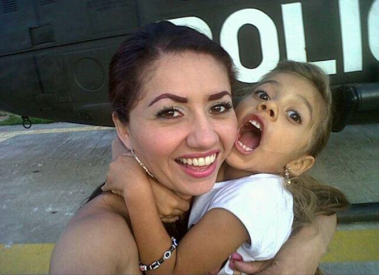
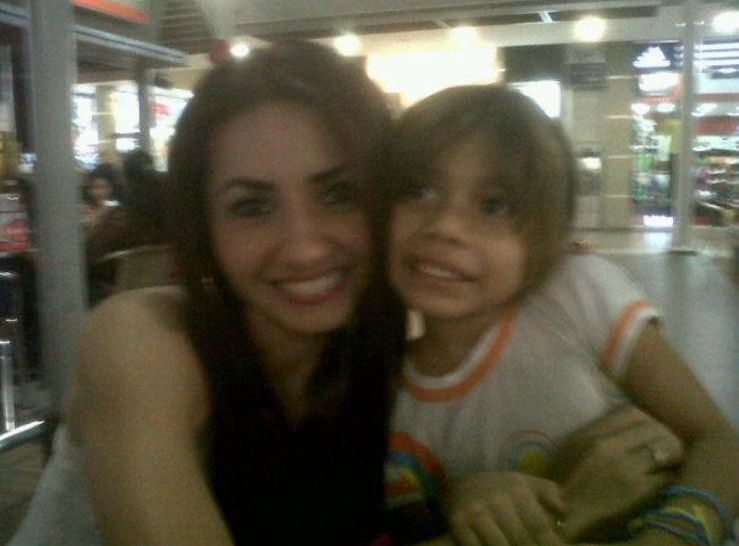
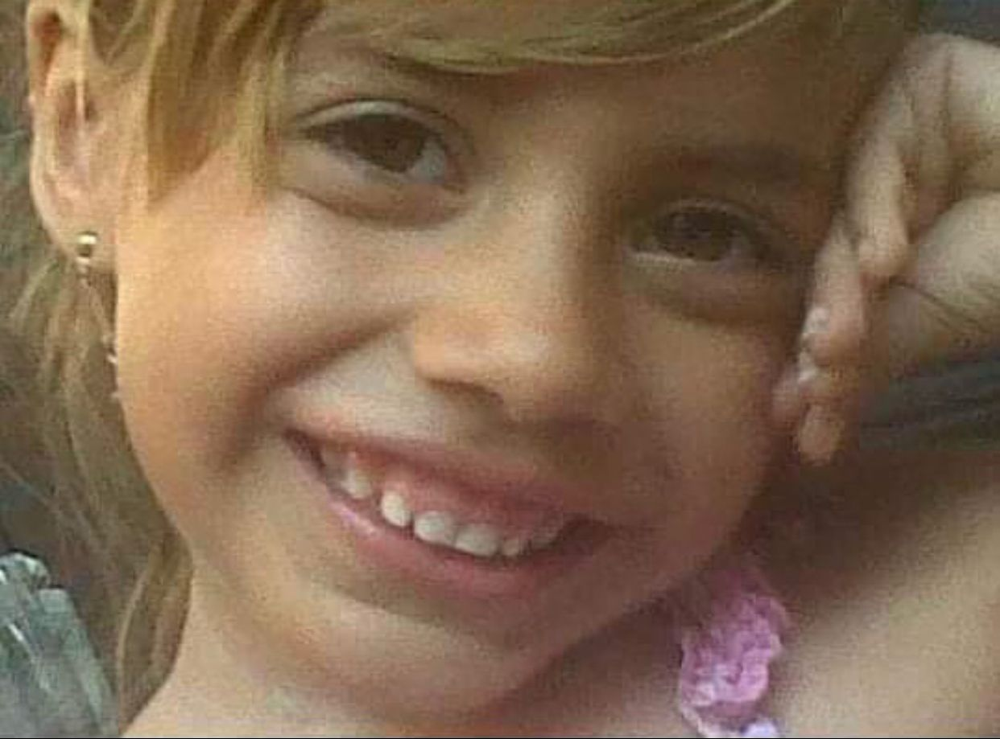
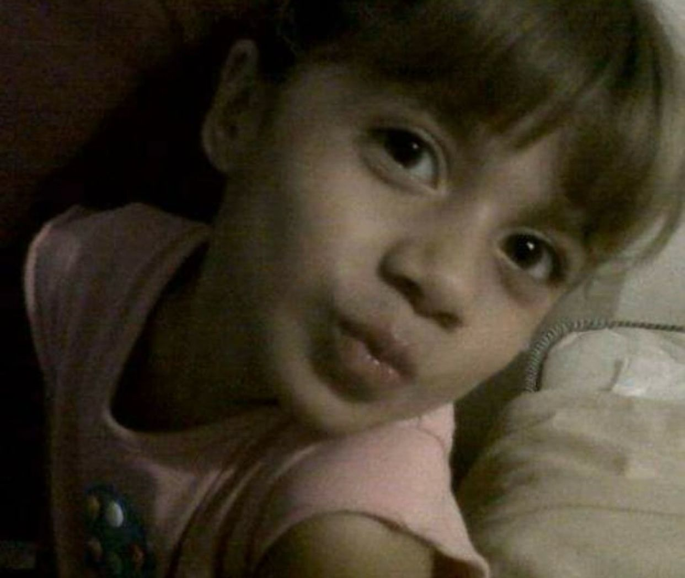
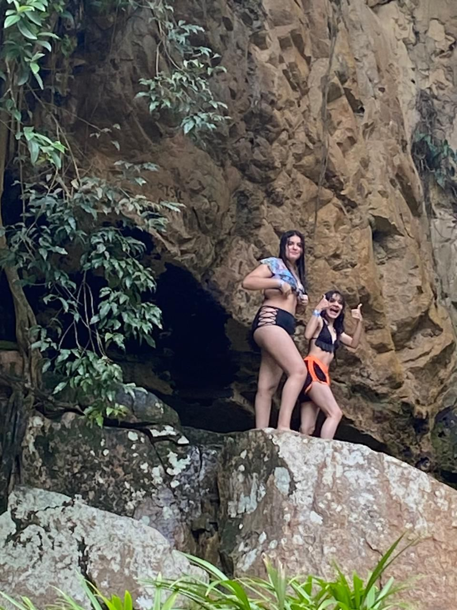
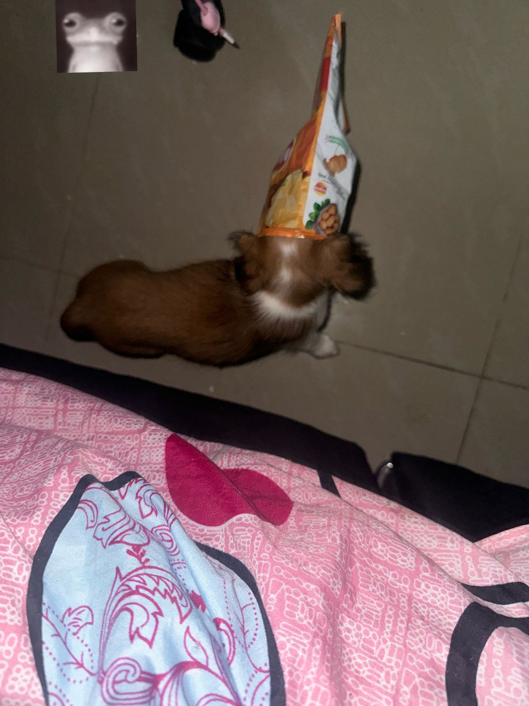
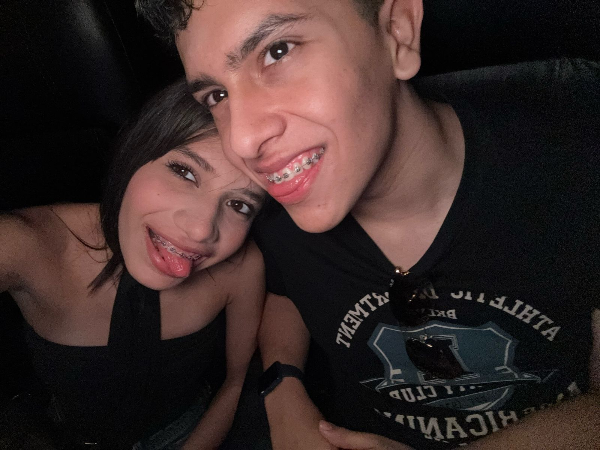

Mi Historia
Hola, soy Sofía, tengo 18 años y nací en el año 2007 en un pequeño pueblo llamado Arauca, en Colombia. Desde muy pequeña mi vida ha estado llena de aventuras, descubrimientos y momentos que han marcado profundamente quién soy hoy.
Mi infancia comenzó rodeada de naturaleza, donde aprendí a amar los paisajes, los animales y la tranquilidad del entorno. También tuve la oportunidad de viajar a Venezuela y conocer su hermosa cultura, sus tradiciones, su gente cálida y sus costumbres, lo que abrió mi mente y mi corazón desde muy temprano a la diversidad del mundo.
A la edad de 4 años, mi familia y yo nos mudamos a Popayán, una ciudad que se convirtió en uno de los capítulos más felices de mi niñez. Viajábamos mucho y conocimos lugares increíbles que aún guardo con cariño en mi memoria. Después de un tiempo, nos trasladamos a Cali, donde viví una etapa muy especial antes de llegar a Bogotá.
 En Bogotá encontré un hogar. Viví allí muchos años, y me enamoré profundamente de la ciudad: su gente amable, el respeto con el que te tratan, la hospitalidad que se siente en cada rincón. Bogotá me enseñó a valorar las pequeñas cosas y a apreciar las conexiones humanas.
Más adelante, nos mudamos a una ciudad más pequeña cerca de Bogotá: Villavicencio. Allí, a los 16 años, viví uno de los momentos más difíciles de mi vida. Sufrí un accidente que me provocó un ACV (accidente cerebrovascular), lo que afectó mi movilidad. Aunque fue un golpe muy duro, hoy me encuentro mucho mejor y sigo en proceso de recuperación con la esperanza de avanzar más cada día.
Mi pasión por la tecnología nació cuando tenía 6 años. En el colegio, hicimos un experimento con pilas y una batería, y fue como magia para mí. Desde entonces, me quedé fascinada con cómo funcionan las cosas y cómo podemos crear con nuestras manos y mente. Sueño con seguir aprendiendo, explorando y creciendo en este mundo tan amplio y emocionante.
Gracias por leer un pedacito de mi historia. ¡Esto apenas comienza!
